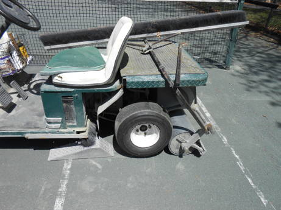
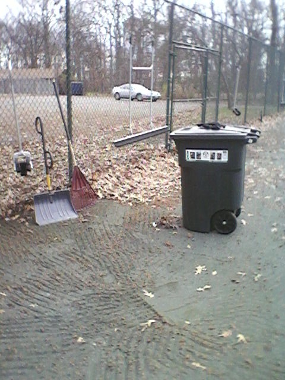

View of GTC's Dismal Swamp in February 2011.
"You are not safe anywhere outside. Run to a safe building or vehicle when you first hear thunder, see lightning or observe dark threatening clouds developing overhead. Stay inside until 30 minutes after you hear the last clap of thunder. Do not shelter under trees."
The GTC sheds are NOT safe shelter. A hardtop car IS safe shelter.
In the summer of 2006, GEWA created overflow parking for the Rec Center by expanding the GTC back parking lot, doubling the width of the back road and the number of parking spaces. That also meant enclosing the GTC courts within the Rec Center fence. During big Rec Center events, GTC member's access will be through the Good Luck Road gate, instead of the main campus.
In October 2006, GSFC re-routed Soil Conservation Road around the north side of the Rec Center. That opened access to the courts from the main campus without security gates.
In 2007, the Rec Center paved the back road and parking lot.
That created a dismal swamp with no drainage in the area south of the clay courts.
This drowned dozens of mature oak trees that had provided excellent shade in the summer.
In July 2008, the Rec Center re-installed the drain pipe that had been under the road to the south of the swamp, alleviating the drainage problem.
Unfortunately, the big old oaks continue to die of rot.
View of GTC's Dismal Swamp in February 2011.
In May 2011, the roofs of the blockhouse and plywood sheds were replaced.
The original tarpaper had shredded and peel away during the spring wind storms, and the underlying plywood has started rotting, partly due to slight slope of the roof and the lack of metal edging to protect the plywood.
The replacement involved creating a steeper pitch with extended rafters, and covering it with corrugated plastic panels by Ondura that promise longer life.

It is a 3-wheeled golf cart that has been modified to pull a roller and/or drag brush. The cart appears to be based on a 1990's utility model marketed by E-Z-GO aka EZ-GO aka EZGO
It takes about 30 minutes to drag and roll all 8 of GTC's Har-Tru courts with the cart. The cart should not be used when the courts are muddy or have standing water on them. Early in the spring, the cart should be used only to roll the courts, since the drag brush will pull the old lines up before their nails have re-set in the clay.
We use a small electric air compressor (described below) to maintain tire pressure.
To remove the front wheel:
| BEFORE BACKING UP | AFTER BACKING UP |
|  |
After flattening the clay courts, the roller must be pried back from under the wheels using the pry bar underneath the pivot bar, by pushing the pry bar hard up and forward.
| BEFORE PRY BACK | AFTER PRY BACK |
Finally, the roller is suspended behing the cart using the pry bar over the pivot bar, lifting the roller and holding it up by tucking the pry bar under the edge of the rear deck.
| BEFORE LIFTING | AFTER LIFTING |
back view
bottom view
The Har-Tru brand is currently owned by Lee Tennis of Charlottesville VA, who have good on-line support.
Har-Tru requires maintenance -- daily water to keep the surface compact, plus annual resurfacing to replace the dust that erodes away in the wind and rain.
The courts are kept level by having the Club players hand-drag the courts every match. The surface is compacted using the electric cart to roll and drag them at least one per week during the playing season.
The court surface is kept damp by programming an automatic sprinkler system to wet them to the point of puddles every day.
In the case of the GTC courts, which are fairly well sheltered from wind, the application of 20 to 25 50-pound bags (a half-ton+) of fresh Har-Tru every spring has kept the courts functioning.
To completely maintain eroding Har-Tru, especially after removing the sandy surface, our courts need at least one ton-per-year (40 bags) of new Har-Tru.
By mid-season, it helps to dump and spread 3 to 5 more 50-pound bags into the "bird bath" depressions behind the center baselines, where players kick the clay away.
After resurfacing or filling bird-bath depressions, buried lines can be raised again to court level. This is done by prying the line up a little with a claw hammer, scraping Har-Tru to the raised line with a square-nosed shovel, pushing the clay under the line with fingers, and walking or rolling the line flat to the court surface.
Salt (magnesium chloride) can be added to the courts to improve dusty conditions, typically in the high-traffic area just behind the baseline. One 50-pound bag per year is recommended.
A cagelike bracket is used to attach a drop-spreader to the cart, in order to resurface the Har-Tru courts each spring.

After dribbling the fresh Har-Tru onto the courts, it must be smoothed before the first watering, or there will be ridged and/or lumpy areas.
The GTC purchases its Har-Tru from HT Tennis in Hagerstown MD, who delivers directly to courtside. The Club usually buys 8 tons of Har-Tru in the spring, applies 4 tons to 8 courts, and stores the remaining 4 tons in the blockhouse for next year's application. In 2016, HT Tennis sold out to American Tennis Courts in Baltimore MD, which rehabbed all 8 Har-Tru courts (2 tons per court, plus new lines for $12k).
It takes 2 men 2 days to resurface GTC's 8 clay courts, using the cart and drop-spreader. The application is bone-dry dust, which must be promptly watered or rained on, to avoid having it blow away.
Since dust blows away more easily than sand, the courts gradually become sandier over the years. Every few years, the sand should be scraped off the surface, when dunes start to appear, creating soft spots.
It takes 4 man-hours to de-sand one court. The job goes quickly with 4 men simultaneously scraping, shoveling, and dumping.
Sand-removal from the courts is best done using the smooth backside of a "scarifier", a broad metal plate on the end of a pole.
A "scarifier" is used for breaking the Har-Tru surface or removing loose sand.
It is a long rod with a "push-broom" metal plate that has a smooth straight-edge and a coarse saw-tooth edge. The Club owns two scarifiers. The one with with the wider, heavier plate is the most effective.
Larger areas that don't require close grooming (i.e. outside the lines) can be cleared using a drag-brush that has a lip or "lute" on it.
As the clay courts age, they become more level, and puddles stand at the low (north) end, making algae ponds in the rainy season. When the surface finally dries, the algae form a slippery, broken crust that must be scraped off and dumped.
The south path along the courts is a good dumping ground for sand and algae crust.
In 2013, each clay court had a volunteer caretaker:
Some fungi like the damp subsurface conditions in well-watered Har-Tru.
One fruits as a mushroom that is a tennis ball-sized, brown spotted sphere.
Persistent dampness along the shady north fence of court 1 can result in a bloom of "orange peel fungus"
Yellowjackets like to nest in the horizontal pipes of the fences. We kill them with bug spray.
Monsanto's patent on glyphosate (brand name Roundup) expired in 2000. Highly concentrated solutions of glyphosate can be ordered on-line at a small fraction of the price of the diluted solution sold under the brand name. For effective weed treatment, mix glyphosate concentrate with water from the drinking fountains and add a little dish soap detergent as a wetting agent.
We have 8 clay courts of 120'x60'=7200 sq ft each, for a total of 57,600 sq ft, or 1.3 acres. So, we can only afford spot-treatments of herbicide, not total coverage.
The Club has a Chapin-brand 15-gallon battery-powered pump used to apply herbicide.
This pump is easy to use when driven around on the electric cart, so the courts can all be sprayed in an hour or two at 1 to 2 gallons per minute. Maintenance of the Chapin pump consists of flushing with water after use, and running antifreeze through it for winter storage.
The Club has a 1.5-gallon pressurized pump used to manually apply herbicide.
All pumps have sprayers with adjustable tips that need to be occasionally unscrewed and cleaned of small debris using a toothpick or pipe cleaner.
Tiny "carpet-weeds" and grass on the courts are more difficult to kill, requiring large amounts of herbicide and/or manual surface scraping.
The smooth edge of a "scarifier" is used for pulling up the small carpet-weeds.
Scrape back and forth a few times to get the roots of the carpet-weeds out of a dry Har-Tru surface.
Then, smooth the surface and leave the weeds to desiccate.
Grass is deep-rooted, and best killed with herbicide before removal. A garden hoe is also effective.
Attempts to control weeds with chlorine bleach or magnesium chloride salt have not been effective.
Algae can be killed with a strong mixture of chlorine bleach. The surface will remain crusty, and it can either be just broken up with the scarifier, or be scraped up into piles and shoveled away using the wheelbarrow.
Water is supplied from the base of the fire hydrant at the turn-off into the Club parking lots.
The water is piped up the wooded hill to the back (north) side of the Har-Tru fencing, behind court 2.
There, water passes through a booster pump to provide sufficient pressure to cover the courts.
The pump is normally sheltered by a simple "doghouse", currently a flipped-over plastic tub.
The pressurized water moves through a backbone plastic pipe buried outside the north fence.
This backbone pipe is tapped by 5 pipes leading to each of 5 zones inside the court fence.
Each zone has 4 to 6 small perimeter sprinklers and a large central sprinkler.
Normally, all zones are blocked from being watered by spring-loaded valves buried in plastic boxes behind the north fence, at the point where the zone taps into the backbone pipe.
The plastic boxes for zone 4 (closed green rectangle, under tools) and zone 5 (open flooded cylinder), housing sprinkler valves behind court 8.
The pump and zone-valves are controlled electrically by a box mounted on the north wall of the GTC blockhouse.
The box contains a small programmable computer that turns on the booster pump and opens the zone-valves, one-at-a-time.
The box is a typical controller for an automatic lawn sprinkler system, "EZ Pro Jr., Model 8300". The description and programming of the complicated device is in the manufacturer's documentation.
During the playing season, the controller is programmed to water the courts for 5 to 15 minutes each, with the longer times in the heat of the summer.
To shut down the system for the winter, the central rotating switch in the controller is set to OFF, and an electrical relay-block is pulled from a box mounted on the fence by the pump, and the pipes are blown out.
 _
_
Relay-block box on the fence behind court 2.
The automated controller has an internal clock that is maintained by a AA battery that should be replaced each year.
The white plastic pipes are the usual glue-together commonly found in sprinkler systems. Unfortunately, there are breaks in the system every year, often under ground.
The small sprinklers beside the fences are cheap screw-in units, although a few expensive brass units still survive.
In 2016, the underground wire from the controller to the solenoid/valve for zone #3 (courts 5-6) stopped conducting. It was temporarily replaced with an above-ground wire running along the bottom of the fences.
Once shut off, the pipes are blown out using an air compressor stored in the blockhouse.
The model is a Kohler K181 gas-powered engine with an oil sump.
Manuals can be found at the Kohler web site.
The engine is hard-to-start, so either dip the spark plug in gasoline or spray starter fluid into the carburator while playing with the choke with the air filter off.
Attach the air hose to the pump and then to the drinking fountains or sprinklers with appropriate screw-on flanges.
The 25 small sprinkler heads by the fences are easily clogged by debris in the line.
They can usually be cleaned out using a pipe cleaner and thin screwdriver.
If that doesn't work, they are replaced.
The pulse-and-swivel heads are easily replaced using a crescent wrench.

Another approach is to use a 96-gallon trash barrel on wheels, which is a useful alternative to plastic tarps, particularly when the wind is blowing.
It takes over 50 barrels-full to empty the courts.
It is efficient to first scrape leaves into the tipped-over barrel, and then fill the barrel to the top using either two rakes or a rake and a snow-shovel as "tongs" to pick up bunches of leaves.

The Club has 6-foot wide drag-rakes with a spiky plastic mat to quickly pull detritus to the fence.
It takes a few man-days to clear the courts in the autumn, and a few man-hours to clear the pine needles and the sticky sweet gum seed balls in the spring.
Bagster And Roller Cart (BARC) operating instructions:
It is used to clear the areas outside the east and south sides of the clay courts, and the east and north sides of the hard courts.
The line corners on the GTC clay courts are kept in place by Bob Davis' line pegs.
Total line-length on one clay tennis court is 481 feet, which requires 1924 nails at 3-inch spacing. It is easier to remember a rule-of-thumb: 500 feet of line and 2000 nails per court. It takes about one man-day to lay lines on one clay court, or just one hour for 8 men working simultaneously.
At GTC, the plastic lines last for years, even at the baselines.
Many nails, however, become loose in the ground every year, and must be either supplemented with additional nails, or pulled out one-by-one, and re-nailed nearby -- all without removing the original plastic line.
Lines that have become significantly higher or lower than the surrounding clay can be simply pried up a bit, have the dirt underneath leveled with a putty knife, and pressed back down.
Spools of new tape and buckets of nails are kept in the Club blockhouse.
A new tape is installed by nailing one end into the ground beyond one end-point, and then stretching the tape over the other end-point, again nailing it into the ground beyond the second endpoint. The tension can be provided by one person sitting on the ground, pulling the tape with pliers. The taut tape in between is then nailed by dividing the length in half, over-and-over, to keep the total line straight. (Nailing from one end to the other typically creates puckers and meanders along the length.) The strips beyond the endpoints are then pried up and cut off.
To help one man to grab, stretch, and nail a new line in place, the Club has a simple home-made hinged device that is kept in the rafters of the blockhouse.
By the end of winter, the nails would be completely out of the ground, and the lines flopped over, useless.
To deal with this, the lines must be walked down every few months, especially in late December and late February.
In mid-winter, the lines reflect sunlight and maintain a "rail" of ice under the line. Meanwhile, the surrounding dark clay surface-melts, making a soup of mud on top of a hidden layer of ice. Walking on clay courts in this condition is a disaster for the pedestrian and the courts.
Heel-to-toe walking on the lines is slow and tiresome.
The job is easier by laying a board over the line and walking on that.
An 8-foot long 1"x8" plank is used to flatten the line to the ground, and push the nail heads level.
 <===>
<===>

To move the board without bending over, attach an 8-foot rod (1"x1" square channel, normally used for electrical wiring) with an S-hook and eyelets.
Walk the board, step off, push the board forward 8 feet with the rod, and walk it again. That is about 4 times faster and a lot neater than heel-to-toe walking. The lines on 8 clay courts can be walked down in about 2 hours, using the board.


In spring 2014, professional estimates to patch the hard court cracks and resurface them were $12,000 to $15,000, far more than the Club's treasury contained.
In autumn 2014, Dan Mandl and Mike Flick plan to clean, fill and patch the hard court cracks using Tennis Universal's products. For those cracks that are structural, we have to clean the cracks, put sand up to the bottom of the asphalt, then a layer of quickrete to 1/2" below top surface and then their fortified elastic crack filler. Long term, we will be able to then use Tennis Universal's other products which include base coat levelers, polymer court levelers and their court paint (including line paints) to recondition the court over the repaired cracks and thus make the court playable and look pretty good.
The long tubes and ballasts require replacements every few years. The replacements are done by GTC volunteers who play after dark in the spring and fall.
Spare bulbs and ballasts are kept in the Club blockhouse. Scaffolding is kept in the Club's plywood shed.
The GTC Har-Tru courts were badly trenched by the sprinklers over the weekend of August 3-4, 2002. Saturday's afternoon thunderstorm apparently turned them on, since the valves are electrically operated by a small computer. The sprinklers ran all night, cutting deep into the already rain-soaked courts.
Thanks to hard work by our grounds keeper, Larry Waters (plus his son-in-law and grandson), all the clay courts were open by August 8. Courts 1-5 were resurfaced. Soaking rains at the end of August converted the dust into clay, but the drought of 2002 continued, leaving them soft and lumpy.
This same problem had happened to court #1 in the late 1990's, when a thunderstorm turned on those sprinklers. It took several months and lots of hand-leveling before the bad spots went away.
After the winter of 2002-2003, many of the sprinkler-dug tenches remained soft. In the spring of 2003, they were dug up and replaced with fresh Har-Tru.
Finally, in 2004, the Har-Tru courts returned to normal, aided by a rainy year beginning in late summer 2003.
Click here for a map of the soft spots.
{kind=link}
{kind=link}
{kind=link}
{kind=link}
{kind=link}
{kind=link}